Physics
ELECTRIC CHARGES AND FIELDS
Everyday static electricity → study of forces, fields and potentials due to stationary
charges
ELECTROSTATICS: INTRODUCTION
📖Definition & Introduction
- Electrostatics studies forces, electric fields and potentials produced by static (stationary) charges.
- Static electricity arises when charges accumulate on surfaces, commonly by rubbing/peeling/separating insulators.
- Discharge of accumulated charge through air or the body produces spark, crackle, and mild electric shock.
- In dry weather, low humidity reduces leakage, so charge builds up more easily on clothes/hair.
- Lightning is a large-scale electrostatic discharge between cloud–cloud or cloud–ground regions.
🖼️Diagram
Charge builds up on insulators; sudden discharge causes spark/shock; electrostatics studies resulting forces and fields.
🎯Key Concepts
- ✨Spark/crackle: rapid discharge when electric field becomes strong enough to ionise air locally
- 🧥Rubbing insulators transfers electrons; no new charge is created (charge redistribution)
- 🧍Electric shock: your body provides a conducting path for discharge to ground/another conductor
- 🧲Like charges repel; unlike charges attract (electrostatic interaction)
- 🧮Charge is quantised: q = ne (integral multiples of elementary charge)
- 🌩️Scope: from tiny static charges to thunderstorms; foundation for electric field and potential
🔎WHY STATIC ELECTRICITY IS COMMON IN DAILY LIFE
- Rubbing/separation transfers electrons between materials (triboelectric effect).
- Insulators hold charge locally; conductors let charge spread and leak to earth.
- Dry air: fewer ions and moisture films, so charge leaks away slowly.
- A spark occurs when strong electric field causes air breakdown and a discharge path forms.
⚙️SCOPE OF ELECTROSTATICS (WHAT YOU STUDY NEXT)
- Quantitative interaction between stationary charges: Coulomb’s law + superposition.
- Field idea: replace "action at a distance" by a local field produced by charges.
- Potential/energy viewpoint: work done in moving a test charge in an electrostatic field.
- Electrostatics is a limiting case: charges at rest (no steady currents).
⚖️STATIC CHARGE ON INSULATOR vs CONDUCTOR
| Basis | Insulator | Conductor |
|---|---|---|
| Motion of charges | Charges not free to move easily | Electrons comparatively free to move |
| After charging | Charge remains near where placed | Charge spreads over the surface |
| Everyday example | Plastic comb, nylon sweater | Metal spoon, human body, Earth |
| Effect on static build-up | Build-up is easy and persists | Leakage to ground reduces build-up |
🧮Formulas
Quantisation of charge (free charges occur in discrete units):
q = ne
SI definition link between current and charge:
Q = It
Force between two point charges in vacuum (magnitude form):
F = 14πε0|q1q2|r2
| q = | charge on a body (C) |
| n = | integer (…, −2, −1, 0, 1, 2, …) |
| e = | elementary charge magnitude = 1.602 × 10−19 C |
| Q = | charge transferred (C) |
| I = | current (A) |
| t = | time (s) |
| F = | electrostatic force magnitude (N) |
| r = | separation between point charges (m) |
Core quantitative law (vacuum)
F = 14πε0|q1q2|r2
📈Graph
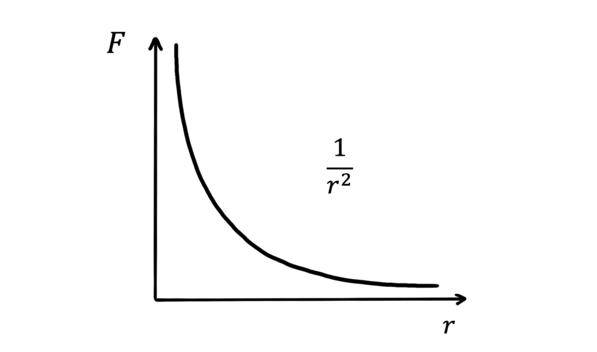
For fixed q1, q2: F decreases rapidly
with distance (F ∝ 1/r2).
✏️Solved Examples
1
Quantisation check: A body has charge −3.2 × 10−19 C. Find the number
of excess electrons and state whether it is physically allowed.
Solution:
Use q = ne with e = 1.6 × 10−19 C.
n = qe = −3.2 × 10−191.6 × 10−19 = −2.
Negative n means excess electrons; integer n means quantisation is satisfied.
Use q = ne with e = 1.6 × 10−19 C.
n = qe = −3.2 × 10−191.6 × 10−19 = −2.
Negative n means excess electrons; integer n means quantisation is satisfied.
✓ Excess electrons = 2; yes, the charge is allowed (it equals −2e).
2
Coulomb force: Two charges +2 μC and +3 μC are 0.50 m apart in vacuum. Find the
magnitude of the force between them.
Solution:
Convert to SI: q1 = 2 × 10−6 C, q2 = 3 × 10−6 C, r = 0.50 m.
Use F = 14πε0|q1q2|r2 with 14πε0 ≈ 9.0 × 109 N m2 C−2.
F = 9.0 × 109 × (2 × 10−6)(3 × 10−6)(0.50)2.
Numerator: (2×3)×10−12 = 6 × 10−12.
Denominator: (0.50)2 = 0.25, so 6 × 10−120.25 = 24 × 10−12 = 2.4 × 10−11.
F = 9.0 × 109 × 2.4 × 10−11 = 21.6 × 10−2 N = 0.216 N.
Convert to SI: q1 = 2 × 10−6 C, q2 = 3 × 10−6 C, r = 0.50 m.
Use F = 14πε0|q1q2|r2 with 14πε0 ≈ 9.0 × 109 N m2 C−2.
F = 9.0 × 109 × (2 × 10−6)(3 × 10−6)(0.50)2.
Numerator: (2×3)×10−12 = 6 × 10−12.
Denominator: (0.50)2 = 0.25, so 6 × 10−120.25 = 24 × 10−12 = 2.4 × 10−11.
F = 9.0 × 109 × 2.4 × 10−11 = 21.6 × 10−2 N = 0.216 N.
✓ Force magnitude = 0.216 N (repulsive, since both charges are positive).
⭐Important Points
- Static electricity involves charge accumulation and discharge; not steady current flow.
- Charging by rubbing is electron transfer; total charge of an isolated system is conserved.
- Charge is quantised: any free charge is ne; e = 1.602 × 10−19 C.
- Unit: 1 C is very large; practical electrostatics often uses μC and mC.
- Coulomb force follows inverse-square with distance; direction along line joining charges.
💡Memory Technique
“RICE: Remember what electrostatics focuses on”
🧮Formula Sheet
Electrostatics: forces/fields/potentials due to stationary
chargesQuantisation: q = ne, e = 1.602 ×
10−19 C1 C = charge carried in 1 s by 1 A current (Q =
It)Unit conversions: 1 μC = 10−6 C; 1 mC =
10−3 CCoulomb (vacuum): F = 14πε0|q1q2|r2ε0 = 8.854 × 10−12 C2 N−1
m−2, and 14πε0 ≈ 9.0
× 109 N m2 C−2
Two kinds of charge, charging by rubbing, and why like repels/unlike attracts
ELECTRIC CHARGE BASICS
📖Definition & Introduction
- Electric charge is a property of matter responsible for electric attraction and repulsion.
- There are two types of charge: positive and negative (two polarities).
- A body is electrified (charged) when it has excess or deficit of electrons; otherwise it is neutral (net charge zero).
- On rubbing (triboelectric charging), electrons transfer between two surfaces; no new net charge is created (charge is conserved).
- Neutralisation: when equal and opposite charges come into contact, their effects cancel and the net charge becomes zero (or much smaller).
🎯Key Concepts
- 🧲Like charges repel; unlike charges attract.
- 🧶Rubbing transfers electrons, so the two objects get charged equally and oppositely in an isolated pair.
- 🧪Glass rod + silk: glass becomes positive, silk becomes negative.
- 🐾Plastic rod + cat’s fur: plastic becomes negative, fur becomes positive.
- 🧠Polarity means the two kinds of charge are different; the names + / − were assigned by Benjamin Franklin.
- 🏺History: Thales observed amber (elektron) rubbed with wool/silk attracts light objects.
🔎HOW CHARGING BY RUBBING WORKS (INSULATORS)
- Initially both bodies are neutral: total positive charge equals total negative charge.
- Rubbing increases contact; some electrons shift from one surface to the other.
- Body that loses electrons becomes positively charged (electron deficit).
- Body that gains electrons becomes negatively charged (electron excess).
- Total charge of the two-body system stays the same: one gains what the other loses (conservation of charge).
⚙️NEUTRALISATION & SIGN CONVENTION (+/−)
- If a charged rod is brought in contact with the cloth/fur it was rubbed with, the charging effects are lost or greatly reduced due to recombination.
- This shows opposite charges can neutralise (net charge becomes zero).
- Benjamin Franklin named the two kinds as positive and negative (a convention).
- Standard convention used here: glass rod or cat’s fur → +; plastic rod or silk → −.
⚖️COMMON RUBBING PAIRS (CHARGE OUTCOME)
| Rubbing pair | Object 1 after rubbing | Object 2 after rubbing |
|---|---|---|
| Glass rod & silk | Glass: + (lost electrons) | Silk: − (gained electrons) |
| Plastic rod & fur (cat's fur) | Plastic: − (gained electrons) | Fur: + (lost electrons) |
| Two glass rods (each rubbed with silk) | Both + → repel | — |
| Glass rod (+) near plastic rod (−) | Attract | Attract |
✏️Solved Q&A
1
A glass rod rubbed with silk attracts small paper bits. Another glass rod rubbed with silk is brought near it. Predict attraction/repulsion and explain.
Answer:
Rubbing glass with silk gives the glass rod the same polarity each time (conventionally +).
Two bodies with like charges repel each other.
Paper bits are initially neutral; a charged rod can attract them due to polarisation, so rod–paper attraction does not contradict rod–rod repulsion.
Rubbing glass with silk gives the glass rod the same polarity each time (conventionally +).
Two bodies with like charges repel each other.
Paper bits are initially neutral; a charged rod can attract them due to polarisation, so rod–paper attraction does not contradict rod–rod repulsion.
✓ The two rubbed glass rods repel; both are positively charged by convention.
2
A plastic rod is rubbed with cat’s fur and becomes charged. It is then touched to the fur it was rubbed with. After contact, the rod no longer attracts light objects strongly. What does this show?
Answer:
Rubbing produces equal and opposite charges on the rod and the fur.
On contact, opposite charges can recombine, reducing net charge.
Reduced attraction indicates the net charge has become zero or much smaller (nearly neutral).
Rubbing produces equal and opposite charges on the rod and the fur.
On contact, opposite charges can recombine, reducing net charge.
Reduced attraction indicates the net charge has become zero or much smaller (nearly neutral).
✓ It shows neutralisation: opposite charges produced by rubbing can cancel when the bodies touch.
⭐Important Points
- Only two kinds of charge are observed: positive and negative (polarity).
- Like repels, unlike attracts is an experimentally established rule for charged bodies.
- Charging by rubbing is due to electron transfer; in solids, protons do not move between bodies.
- Rubbing produces charges in pairs: if one becomes +q, the other becomes −q (for an isolated pair).
- Franklin’s sign convention is arbitrary but standard: glass rubbed with silk is taken positive.
💡Memory Technique
“Mnemonic: GSi and PFu”
📌Quick Recap
Two types of charge: positive and negative (polarity).Like charges repel; unlike charges attract.Rubbing causes electron transfer: loss of electrons → +, gain of electrons → −.In an isolated rubbing pair, charges produced are equal and opposite (charge conserved).Neutralisation: opposite charges on contact can cancel so net charge becomes zero (or much smaller).Convention: glass rod/cat’s fur positive; plastic rod/silk negative.
Detect charge and compare its amount using leaf divergence
GOLD LEAF ELECTROSCOPE (GLE)
📖Definition & Introduction
- Gold-leaf electroscope is a device to detect electric charge and compare its amount by leaf divergence.
- It has a metal knob connected to a metal rod ending in two thin gold leaves inside a glass box.
- When charge reaches the leaves, they get same sign and repel, so they diverge.
- Degree of divergence increases with the amount of charge given to the electroscope (for a fixed instrument).
- Leaves collapse when charge leaks away (moist air/earthing) or when neutralised by opposite charge.
2 Diagram
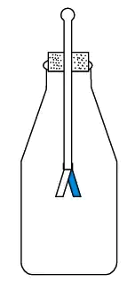
On touching the knob, charge reaches both leaves; like charges repel, causing
divergence.
🎯Key Concepts
- 🧲Principle: both leaves acquire like charge → mutual repulsion → divergence.
- 🧱Metal parts are conductors; charge spreads over connected conducting surfaces.
- 🧤Insulating stand and glass case reduce leakage; dry air gives sharper divergence.
- 🤝On contact with charged body, charge flows until potentials equalise.
- 📐Divergence is a comparative indicator: larger opening angle ⇒ more charge on GLE.
- 🌍Earthing discharges the electroscope: leaves come together.
🔎WORKING: DETECTING CHARGE
- Bring the object near: leaves may diverge due to charge redistribution (induction).
- Touch the knob with the charged object: charge flows to rod and leaves (conduction).
- Both leaves obtain same sign → they repel and diverge visibly.
- If the object is neutral, no sustained divergence; any momentary movement dies out.
- After use, earth the knob to discharge and reset the electroscope.
⚙️LEAF DIVERGENCE AS AN INDICATOR OF AMOUNT OF CHARGE
- More charge on the electroscope ⇒ stronger repulsion between leaves ⇒ larger divergence.
- For the same electroscope, compare charges by comparing steady divergence under similar conditions.
- Divergence decreases if charge leaks (humidity, dirty insulators) even without touching anything.
- Do not treat divergence as an exact measurement of q; it is mainly a relative indicator.
⚖️CONDUCTION vs INDUCTION IN A GOLD-LEAF ELECTROSCOPE
| Basis | Conduction (touch knob) | Induction (bring near) |
|---|---|---|
| Contact needed? | Yes | No |
| Charge transferred to GLE? | Yes (net charge given) | No net transfer (only redistribution) |
| Leaf divergence | Usually larger and remains until leakage/earthing | May be temporary; changes with distance of object |
| Use case | Charging the electroscope and comparing amounts | Detect presence of charge without transferring it |
✏️Solved Q&A
1
A charged rod is touched to the knob of a gold-leaf electroscope. The leaves diverge
and stay apart even after removing the rod. What can you conclude?
Answer:
Touching gives conduction: charge flows from rod to electroscope until potentials equalise.
The electroscope now has a net charge.
Both gold leaves carry the same sign (as the electroscope) so they repel and remain apart.
They stay apart because the charge remains on the conductor unless it leaks away or is earthed.
Touching gives conduction: charge flows from rod to electroscope until potentials equalise.
The electroscope now has a net charge.
Both gold leaves carry the same sign (as the electroscope) so they repel and remain apart.
They stay apart because the charge remains on the conductor unless it leaks away or is earthed.
✓ The electroscope has acquired net charge by conduction; persistent divergence
indicates retained charge.
2
An electroscope shows small divergence. You bring a highly charged object near the
knob without touching. The divergence increases. You remove the object and the leaves collapse back.
Explain.
Answer:
No contact means no net charge transfer; only induction occurs.
Nearby charge causes redistribution in the metal rod and leaves, increasing like-charge on leaves and hence divergence.
When the object is removed, redistribution disappears; the electroscope returns close to neutral state, so leaves collapse.
No contact means no net charge transfer; only induction occurs.
Nearby charge causes redistribution in the metal rod and leaves, increasing like-charge on leaves and hence divergence.
When the object is removed, redistribution disappears; the electroscope returns close to neutral state, so leaves collapse.
✓ The temporary increase is due to induction (redistribution). Collapse after
removal shows no net charge was given to the electroscope.
⭐Important Points
- Leaves diverge because they get like charge; repulsion is the direct cause.
- Charge given at knob spreads through the connected metal rod and reaches both leaves.
- Degree of divergence is used to compare amount of charge for the same instrument.
- Humidity and dirt increase leakage; keep electroscope dry for reliable observation.
- Earthing the knob discharges the electroscope and makes leaves collapse.
💡Memory Technique
“Mnemonic: K-R-L-D”
📌Quick Recap
GLE detects charge: leaf divergence ⇒ charged.Touch knob (conduction): net charge transferred to electroscope.Bring near (induction): redistribution only; divergence depends on
distance.More charge on electroscope ⇒ greater divergence (same
instrument, similar conditions).Earth knob to reset: leaves collapse
due to discharge.Dry, clean insulation reduces leakage; humidity reduces
divergence by charge leakage.
Solids get charged by loss/gain of electrons; total charge is conserved (no new
charge created).
CHARGING BY ELECTRON TRANSFER
📖Definition & Introduction
- Charging by electron transfer is electrification of bodies due to electrons moving from one body to another.
- Ordinary matter is electrically neutral: total positive charge (protons) equals total negative charge (electrons).
- In solids, only electrons are mobile enough to transfer; protons remain bound in nuclei.
- A body becomes positively charged when it loses electrons (electron deficit).
- A body becomes negatively charged when it gains electrons (electron excess).
- During rubbing/contact, charge is redistributed; net charge of the isolated pair remains zero.
🖼️Diagram
Rubbing transfers electrons: glass loses e− → becomes +; silk gains
e− → becomes −.
🎯Key Concepts
- 🧩Neutral ≠ no charges present; it means balanced + and − charges.
- 🧲Two bodies after rubbing get equal magnitude charges with opposite signs.
- 🧮Charge is quantised: gained/lost in whole numbers of electrons.
- 🧵Example: glass + silk → electrons go to silk → glass becomes +, silk becomes −.
- 🔁If rubbed bodies are later touched together, opposite charges neutralise and attraction vanishes.
- 🧱Transferred electrons are a tiny fraction of total electrons in each body.
🔎MICROSCOPIC PICTURE IN SOLIDS
- Atoms contain fixed protons in nuclei and surrounding electrons.
- In solids, some outer electrons are less tightly bound and can move between surfaces.
- Rubbing increases contact area and repeated separation, enabling electron transfer.
⚙️CONSERVATION: WHY "NO NEW CHARGE"
- Charging is separation of existing charges, not creation of charges.
- If an isolated pair is rubbed, total charge remains zero: one gains what the other loses.
- Neutralisation occurs when opposite charges are allowed to recombine via contact.
⚖️Positive vs Negative Charging (Electron Transfer View)
| Basis | Positive charging | Negative charging |
|---|---|---|
| What happens to electrons? | Electrons leave the body | Electrons enter the body |
| Microscopic description | Electron deficit (fewer electrons than protons) | Electron excess (more electrons than protons) |
| Net charge sign | + | − |
| Example in rubbing | Glass rod after rubbing with silk | Silk cloth after rubbing with glass |
| Is new charge created? | No, electrons were transferred out | No, electrons were transferred in |
✏️Solved Q&A
1
A glass rod is rubbed with silk. Afterwards, the rod and silk attract each other.
Explain the sign of charge on each and the microscopic reason.
Answer:
Initially, both are neutral: positive (protons) and negative (electrons) charges are balanced.
On rubbing, some electrons transfer from glass to silk (electrons are the mobile charges in solids).
Glass has electron deficit ⇒ net positive charge; silk has electron excess ⇒ net negative charge.
Unlike charges attract, so rod and silk attract after rubbing.
Initially, both are neutral: positive (protons) and negative (electrons) charges are balanced.
On rubbing, some electrons transfer from glass to silk (electrons are the mobile charges in solids).
Glass has electron deficit ⇒ net positive charge; silk has electron excess ⇒ net negative charge.
Unlike charges attract, so rod and silk attract after rubbing.
✓ Glass rod becomes positive, silk becomes negative, due to
transfer of electrons from glass to silk.
2
Two objects A and B are rubbed together in isolation. After rubbing, A is found
positively charged. What can be concluded about B and about net charge of the pair?
Answer:
A positively charged means A has lost electrons (electron deficit).
Those electrons must have gone to B, so B has gained electrons and becomes negatively charged.
Because the system is isolated, total charge is conserved: charge gained by B equals charge lost by A.
A positively charged means A has lost electrons (electron deficit).
Those electrons must have gone to B, so B has gained electrons and becomes negatively charged.
Because the system is isolated, total charge is conserved: charge gained by B equals charge lost by A.
✓ B becomes negative with equal magnitude of charge; net charge of the
isolated pair remains unchanged (same as before rubbing).
⭐Important Points
- In solids, charging mainly occurs by transfer of electrons, not protons.
- A charged body means excess or deficit of electrons relative to protons.
- Rubbing produces equal and opposite charges on the two bodies (isolated system).
- If charged bodies are brought into contact, opposite charges can neutralise.
- Only a very small fraction of electrons shift; still gives measurable charge.
💡Memory Technique
“Mnemonic: LEO–GEN”
📌Quick Recap
Neutral body: total + charge = total − charge (balanced).Positive charging: loss of electrons → electron deficit.Negative charging: gain of electrons → electron excess.Rubbing/contact: electrons transfer; no new charge is created.In an isolated pair: charge gained by one = charge lost by the other
(conservation).Glass–silk: electrons go glass → silk; glass becomes +,
silk becomes −.
Charge mobility decides: charges spread on conductors, stay localised on insulators
CONDUCTORS AND INSULATORS
📖Definition & Introduction
- Conductors have mobile charges (mainly electrons in metals) that move easily through the material.
- Insulators have charges tightly bound to atoms; they do not move freely through the material.
- On giving charge to a conductor, it quickly spreads over the outer surface.
- On giving charge to an insulator, it remains localised near the point of charging.
- Semiconductors form a third class: charge mobility is intermediate between conductors and insulators, and depends strongly on doping/temperature/light.
2 Diagram
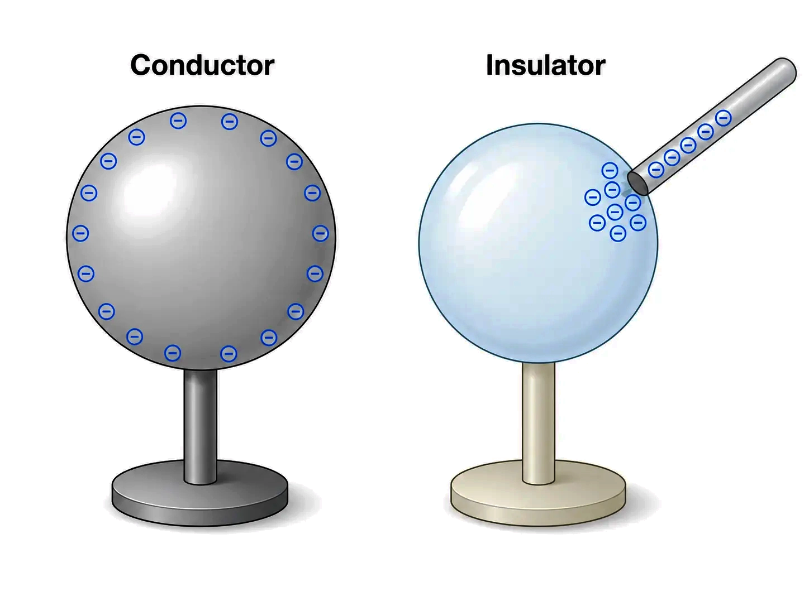
FIGURE 1.29
🎯Key Concepts
- 🧲Metals have many free electrons → high charge mobility → good conductors.
- 🧍Human body and earth act as conductors; charges can leak to ground (earthing).
- 🎛️Any extra charge on an isolated conductor resides on the surface, not in the bulk.
- 🧴Glass/plastic/nylon: high resistance → charge stays where produced (static electricity).
- 🪵Handles of wood/plastic isolate your hand from metal, reducing charge leakage.
🔎CLASSIFICATION BY CHARGE MOBILITY
- Conductors: many mobile electrons/ions; low resistance; easy charge flow.
- Insulators: electrons strongly bound; high resistance; negligible charge flow.
- Semiconductors: intermediate resistance; conductivity increases with temperature/light; used in electronics.
- Real materials are not perfect; classification depends on conditions (temperature, impurities, moisture).
⚙️HOW CHARGE DISTRIBUTES: CONDUCTOR VS INSULATOR
- On a conductor, charges move until electrostatic equilibrium: net charge appears on outer surface.
- If connected to earth, excess charge flows to/from earth until the conductor becomes neutral.
- On an insulator, deposited charge cannot travel far; it stays near the rubbed/contact region.
- Hence a plastic/nylon comb charges easily, but a metal spoon in hand quickly discharges via body → earth.
- A metal rod with wood/plastic handle can retain charge if the metal part is not touched.
⚖️Conductors vs Insulators vs Semiconductors
| Basis | Conductors | Insulators | Semiconductors |
|---|---|---|---|
| Charge carriers | Many mobile electrons (in metals) | Electrons tightly bound | Few carriers; mobility intermediate (depends on doping, temperature, light) |
| Resistance to charge flow | Low | High | Intermediate (varies strongly with conditions) |
| Charge deposited on the body | Spreads over entire outer surface | Stays localised near point of deposition | May leak/spread slowly if sufficient carriers are available (e.g., due to doping/heating/illumination); otherwise remains largely localised |
| Examples (from syllabus) | Metals, human/animal body, earth | Glass, plastic, nylon, wood, porcelain | Si, Ge |
| Everyday consequence | Metal spoon in hand discharges quickly | Plastic comb holds static charge | Used to control conduction in electronic devices |
✏️Solved Q&A
1
Why does a plastic comb get electrified on combing dry hair, but a metal spoon
usually does not show charging when held in hand?
Answer:
Rubbing transfers a small number of electrons, creating excess charge.
In plastic (insulator), the deposited charge cannot move far, so it remains near the rubbed region.
In metal (conductor), charge spreads quickly and leaks through your body (conductor) to earth.
Hence the spoon fails to retain noticeable static charge while held.
Rubbing transfers a small number of electrons, creating excess charge.
In plastic (insulator), the deposited charge cannot move far, so it remains near the rubbed region.
In metal (conductor), charge spreads quickly and leaks through your body (conductor) to earth.
Hence the spoon fails to retain noticeable static charge while held.
✓ Plastic retains localised charge; a held metal spoon loses charge via
body-to-earth leakage.
2
A metal rod has a wooden/plastic handle. It is rubbed with cloth without touching
the metal part. It shows signs of charging. Explain.
Answer:
Rubbing transfers electrons, charging the metal rod.
Metal allows charge to spread over its surface (electrostatic equilibrium on the surface).
The insulating handle prevents charge from leaking through your hand to earth.
Therefore the metal part can retain charge and produce observable electrostatic effects.
Rubbing transfers electrons, charging the metal rod.
Metal allows charge to spread over its surface (electrostatic equilibrium on the surface).
The insulating handle prevents charge from leaking through your hand to earth.
Therefore the metal part can retain charge and produce observable electrostatic effects.
✓ The handle isolates the conductor from your body/earth, so the conductor can
hold its surface charge.
⭐Important Points
- Conductors: charges (electrons) are comparatively free to move; insulators: charges are bound.
- Extra charge on a conductor redistributes over the entire outer surface rapidly.
- Extra charge on an insulator remains localised; it does not spread over the body.
- Human body and earth are conductors; earthing provides a path for charge to flow away.
- Static electricity effects are prominent on insulators, especially in dry conditions (less leakage).
💡Memory Technique
“MOBILE → METAL → MOVES (MMM)”
📌Quick Recap
Conductors: mobile electrons → charge spreads over entire outer
surface.Insulators: charges are bound → deposited charge stays
localised.Examples conductors: metals, human body,
earth.Examples insulators: glass, plastic, nylon,
wood, porcelain.Metal held in hand often discharges: charge leaks via body →
earth.Insulating handle isolates: reduces leakage, allowing metal part to
retain charge.Semiconductors: conductivity is intermediate and depends
strongly on doping/temperature/light.
Additivity + Conservation (isolated system) + Quantisation: q = ne
PROPERTIES OF CHARGE
📖Definition & Introduction
- Electric charge is a scalar property of matter that can be positive or negative (SI unit: C).
- For a system of charges, total charge equals the algebraic sum of individual charges.
- In an isolated system, net charge remains constant; charges may only redistribute.
- Charge is quantised: any free charge q occurs in discrete steps of e, so q = ne.
- Electron carries −e, proton carries +e, where e = 1.602192 × 10−19 C.
🖼️Diagram
![Figure]()
Charles Augustin de Coulomb (1736 – 1806) Coulomb, a French physicist, began his
career as a military engineer in the West Indies. In 1776, he returned to Paris and retired to a small
estate to do his
🎯Key Concepts
- ➕Additivity: Qtotal = algebraic sum of all charges (use signs).
- 🔒Conservation: net charge of an isolated system does not change with time.
- 🔢Quantisation: in ordinary charging, q changes in steps of e due to electron transfer.
- 📍Point charge: size ≪ separation, treat entire charge concentrated at one point.
- 🧾Units: 1 C is large; common: 1 μC = 10−6 C, 1 mC = 10−3 C.
🔎ADDIVITY (SCALAR + ALGEBRAIC SUM)
- For charges q1, q2, total charge Q = q1 + q2 (use signs).
- For n charges: Q = q1 + q2 + … + qn.
- Charge has magnitude but no direction: it is a scalar, unlike force/field.
- Point charges: when size ≪ separation, treat entire charge at a point.
⚙️CONSERVATION + QUANTISATION (WHY BOTH HOLD TOGETHER)
- Charging by rubbing/contact is electron transfer; no new net charge is created.
- Isolated system: interactions can move charge between bodies, but Qtotal remains constant.
- Quantisation: any observable free charge is q = ne, n ∈ ℤ (positive/negative/zero).
- At macroscopic scale, step e is tiny, so charge appears continuous.
⚖️Electron vs Proton (basic charge carriers)
| Basis | Electron | Proton |
|---|---|---|
| Charge | −e | +e |
| Magnitude of charge | e = 1.602192 × 10−19 C | e = 1.602192 × 10−19 C |
| Transfer in solids | Moves between bodies (causes charging) | Bound in nucleus (does not transfer in rubbing) |
| Role in quantisation | Removing/adding 1 electron changes q by +e/−e | Protons stay in nuclei in ordinary charging; their number usually does not change |
🧮Formulas
Additivity for multiple charges:
Qtotal = Σqi =
q1 + q2 + … + qn
Charge on a body from counting protons and electrons:
q = (np −
ne)e
Hence free charge is an integer multiple of e:
q = ne, n ∈ ℤ
| Qtotal = | Net charge of the system (C) |
| qi = | i-th charge in the system (C) |
| q = | Charge on a body/particle (C) |
| n = | Integer number of elementary charges (… −2, −1, 0, 1, 2 …) |
| np, ne = | Number of protons and electrons, respectively |
| e = | Elementary charge magnitude = 1.602192 × 10−19 C |
Quantisation of charge
q = ne ( n ∈ ℤ )
✏️Solved Examples
1
A system has charges +2.5 μC, −0.8 μC and −1.2 μC. Find the net charge (in C).
Solution:
Add algebraically: Q = (+2.5 − 0.8 − 1.2) μC
Q = (+0.5) μC
Convert: 1 μC = 10−6 C ⇒ Q = 0.5 × 10−6 C
Add algebraically: Q = (+2.5 − 0.8 − 1.2) μC
Q = (+0.5) μC
Convert: 1 μC = 10−6 C ⇒ Q = 0.5 × 10−6 C
✓ Qnet = +5.0 × 10−7 C
2
How many electrons must be removed from a neutral body to make it +3.2 μC? (Use
e = 1.602192 × 10−19 C.)
Solution:
Quantisation: q = ne ⇒ n = qe
q = +3.2 μC = 3.2 × 10−6 C
n = 3.2 × 10−61.602192 × 10−19 = 3.21.602192 × 1013
3.21.602192 ≈ 1.9973 ⇒ n ≈ 1.9973 × 1013
Meaning: Positive charge implies electron deficit, so electrons removed ≈ n (an integer in reality).
Quantisation: q = ne ⇒ n = qe
q = +3.2 μC = 3.2 × 10−6 C
n = 3.2 × 10−61.602192 × 10−19 = 3.21.602192 × 1013
3.21.602192 ≈ 1.9973 ⇒ n ≈ 1.9973 × 1013
Meaning: Positive charge implies electron deficit, so electrons removed ≈ n (an integer in reality).
✓ Electrons removed ≈ 2.0 × 1013
⭐Important Points
- Charge is a scalar; add charges with sign (algebraic sum), not vector addition.
- Conservation applies to an isolated system: no net charge enters or leaves.
- In rubbing/contact, electrons transfer; protons stay bound in nuclei.
- Quantisation: q = ne, with n an integer (free charges).
- 1 C corresponds to ≈ 6.24 × 1018 electrons (in magnitude); hence μC, mC are common.
💡Memory Technique
“A-C-Q: Add, Conserve, Quantise”
🧮Formula Sheet
Qtotal = Σqi (additivity; algebraic
sum).Isolated system: Qtotal = constant (conservation of
charge).q = ne, n ∈ ℤ (quantisation of free
charge).q = (np − ne)e (from
counting protons/electrons).e = 1.602192 × 10−19 C; electron
= −e, proton = +e.1 μC = 10−6 C; 1 mC =
10−3 C.
Inverse-square force between two point charges; scalar + vector forms; action–reaction
pair
COULOMB'S LAW
📖Definition & Introduction
- Force between two point charges in vacuum acts along the line joining them: F ∝ |q1q2|r2.
- Magnitude: F = k|q1q2|r2, where k = 14πε0. (Absolute value is only for magnitude; direction depends on signs.)
- In SI, ε0 (permittivity of free space) = 8.854 × 10−12 C2 N−1 m−2 and k ≈ 8.99 × 109 N m2 C−2.
- Vector form uses the separation vector r⃗21 = r⃗2 − r⃗1 and unit vector r̂21.
- Like charges repel; unlike charges attract; the sign is handled automatically in vector form.
- Consistent with Newton’s third law: F⃗12 = −F⃗21.
2 Diagram
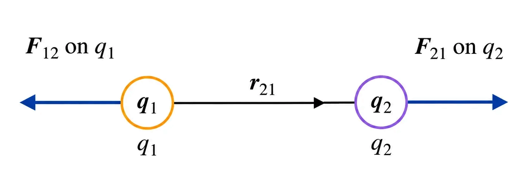
Vector geometry:
from charge 1 to charge 2; forces form an action–reaction pair.
🎯Key Concepts
- 📏Inverse-square: doubling r makes force 14 times.
- 🧭Direction is along the joining line; r̂ sets direction unambiguously.
- ⚖️Action–reaction: forces on the two charges are equal and opposite.
- 🧪Coulomb established the law using a torsion balance with charged spheres.
- 🔎Point-charge approximation valid when size of bodies ≪ separation.
🔎TORSION BALANCE: HOW INVERSE-SQUARE WAS INFERRED
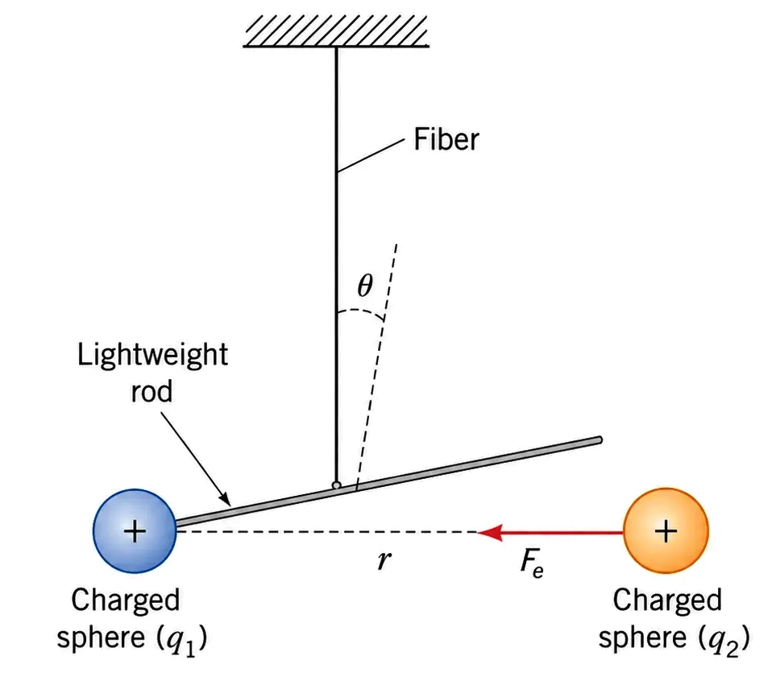
- Two small charged metal spheres exert torque on a fiber; twist angle ∝ force.
- Keep charges fixed, vary separation r: measured F ∝ 1r2.
- To vary charge systematically, touch an identical uncharged sphere: charge becomes q/2 by symmetry.
- Comparing forces for q, q/2, q/4 confirms F ∝ q1q2.
⚙️VECTOR FORM + NEWTON'S THIRD LAW
- Define r⃗21 = r⃗2 − r⃗1, r = |r⃗21|, and r̂21 = r⃗21 |r⃗21| .
-
Force on charge 2 due to charge 1:
F⃗21 = 1 4πε0 q1q2 r2 r̂21.
-
Interchanging charges 1 and 2 gives:
F⃗12 = 1 4πε0 q1q2 r2 r̂12.
-
Since
r⃗12
=
−r⃗21
⇒
r̂12
=
−r̂21,
hence
F⃗12 = −F⃗21
⚖️LIKE vs UNLIKE CHARGES (USING VECTOR FORM)
| Basis | Like charges (q1q2 > 0) | Unlike charges (q1q2 < 0) |
|---|---|---|
| Nature of force | Repulsive | Attractive |
| Direction of F⃗21 relative to r̂21 | Along r̂21 | Along −r̂21 (= r̂12) |
| Need separate formulas? | No; the sign of q1q2 handles it | No; the sign of q1q2 handles it |
| Field-line intuition | Charges push away along the line joining them | Charges pull toward each other along the joining line |
🧮Formulas
Experimental proportionalities for two point charges in vacuum:
F ∝ q1q2 and F ∝
1r2
Combine into one equation with constant k (magnitude form):
F = k|q1q2|r2
In SI, write k using ε0:
k = 14πε0
Vector form (force on 2 due to 1), with r = |r⃗21|:
F⃗21 = 14πε0q1q2r2
r̂21
Newton’s third law follows from r̂12 = −r̂21:
F⃗12 = −F⃗21
| F = | Magnitude of electrostatic force between charges (N) |
| F⃗21 = | Force on charge 2 due to charge 1 (N) |
| q1, q2 = | Point charges (C) |
| r = | Distance between charges: r = |r⃗2 − r⃗1| (m) |
| r⃗21 = | Separation vector from charge 1 to charge 2: r⃗21 = r⃗2 − r⃗1 |
| r̂21 = | Unit vector from charge 1 to charge 2 |
| k = | Coulomb constant ≈ 8.99 × 109 N m2 C−2 |
| ε0 = | Permittivity of free space = 8.854 × 10−12 C2 N−1 m−2 |
Coulomb’s law (vector form in vacuum)
F⃗21 = 14πε0q1q2r2
r̂21
📈Graph
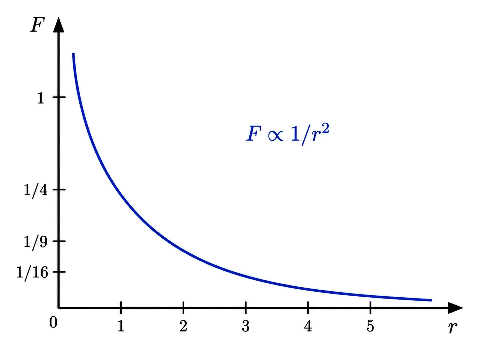
Qualitative plot: magnitude falls rapidly with distance as F ∝
1/r2 (for fixed charges).
✏️Solved Examples
1
Two point charges q1 = +2.0 μC and q2 = −3.0
μC are 0.50 m apart in vacuum. Find (i) magnitude of force, (ii) nature (attractive/repulsive).
Solution:
Given: k = 8.99 × 109 N m2 C−2, r = 0.50 m, q1 = 2.0 × 10−6 C, q2 = −3.0 × 10−6 C.
Magnitude: F = k|q1q2|r2 = 8.99×109 × |(2.0×10−6)(3.0×10−6)|(0.50)2.
Compute: |q1q2| = 6.0 × 10−12 C2, and r2 = 0.25 m2.
6.0 × 10−120.25 = 24.0 × 10−12 = 2.4 × 10−11.
F = 8.99×109 × 2.4×10−11 = (8.99×2.4)×10−2 = 21.576×10−2 N = 0.21576 N ≈ 0.216 N.
Since charges are opposite in sign, force is attractive along the line joining them.
Given: k = 8.99 × 109 N m2 C−2, r = 0.50 m, q1 = 2.0 × 10−6 C, q2 = −3.0 × 10−6 C.
Magnitude: F = k|q1q2|r2 = 8.99×109 × |(2.0×10−6)(3.0×10−6)|(0.50)2.
Compute: |q1q2| = 6.0 × 10−12 C2, and r2 = 0.25 m2.
6.0 × 10−120.25 = 24.0 × 10−12 = 2.4 × 10−11.
F = 8.99×109 × 2.4×10−11 = (8.99×2.4)×10−2 = 21.576×10−2 N = 0.21576 N ≈ 0.216 N.
Since charges are opposite in sign, force is attractive along the line joining them.
✓ F ≈ 0.216 N, attractive.
2
A force of 0.12 N acts between two point charges of equal magnitude kept 30
cm apart in vacuum. Find the magnitude of each charge.
Solution:
Given: F = 0.12 N, r = 0.30 m, |q1| = |q2| = q, k = 8.99 × 109 N m2 C−2.
Use magnitude form: F = kq2r2 ⇒ q = √(Fr2k).
Compute r2 = (0.30)2 = 0.09.
Fr2k = 0.12×0.098.99×109 = 0.01088.99×109 ≈ 1.201×10−12.
q = √(1.201×10−12) = √(1.201)×10−6 ≈ 1.096×10−6 C.
So each charge has magnitude ≈ 1.10 μC. (If charges have same sign → repulsion; opposite signs → attraction.)
Given: F = 0.12 N, r = 0.30 m, |q1| = |q2| = q, k = 8.99 × 109 N m2 C−2.
Use magnitude form: F = kq2r2 ⇒ q = √(Fr2k).
Compute r2 = (0.30)2 = 0.09.
Fr2k = 0.12×0.098.99×109 = 0.01088.99×109 ≈ 1.201×10−12.
q = √(1.201×10−12) = √(1.201)×10−6 ≈ 1.096×10−6 C.
So each charge has magnitude ≈ 1.10 μC. (If charges have same sign → repulsion; opposite signs → attraction.)
✓ Each charge magnitude ≈ 1.10 μC.
⭐Important Points
- Coulomb’s law applies to point charges or spherical charges with size ≪ separation.
- Force acts along the line joining charges; it is a central force.
- k = 14πε0 and ε0 value is frequently used in numericals.
- Vector definition: r⃗21 = r⃗2 − r⃗1; r̂21 gives direction unambiguously.
- Newton’s third law: F⃗12 = −F⃗21 holds for Coulomb interaction between two point charges.
💡Memory Technique
“C-Q-R²: Charges / Range squared”
🧮Formula Sheet
F = k|q1q2|r2
(magnitude in vacuum)k = 14πε0 ≈ 8.99 × 109 N
m2 C−2ε0 = 8.854 × 10−12
C2 N−1 m−2r⃗21 =
r⃗2 − r⃗1, r = |r⃗21|, r̂21 =
r⃗21|r⃗21|F⃗21 = 14πε0q1q2r2
r̂21F⃗12 = −F⃗21
Net force on a charge due to many charges = vector sum of individual Coulomb forces
SUPERPOSITION OF FORCES (ELECTROSTATICS)
📖Definition & Introduction
- Principle of superposition: Net electrostatic force on a charge equals the vector sum of forces due to each other charge separately.
- Each pairwise force is given by Coulomb’s law; it is independent of other charges (for point charges in electrostatics).
- Addition is vectorial: use components, triangle/parallelogram law, or head-to-tail method.
- For n charges, total force is written using summation (∑) over all other charges.
- Direction is along the joining line; attraction/repulsion sets the sense.
2 Diagram
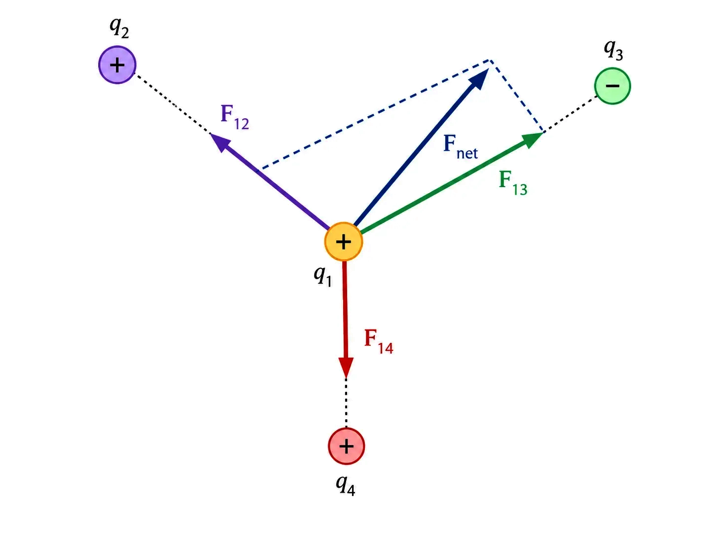
For three charges: F1 = F12 +
F13 (vector addition).
🎯Key Concepts
- ➡️Write each pair force on the same target: F1i along the line joining q1 and qi
- 🧮Resolve: Fx=∑Fx,i, Fy=∑Fy,i
- 🧭Use a fixed unit-vector convention to avoid sign errors
- 📐For two forces, use parallelogram (law of cosines) for resultant
- ⚖️By symmetry, components can cancel giving zero net force
🔎WORKING METHOD (EXAM-FRIENDLY)
- Step 1: Identify the charge on which net force is required.
- Step 2: For each other charge, write F1i by Coulomb’s law with direction.
- Step 3: Resolve all forces into components and add: Fx, Fy.
- Step 4: Magnitude F = √(Fx² + Fy²), direction from tanθ = Fy/Fx (use quadrant).
- Use symmetry to cancel equal and opposite components.
⚙️PARALLELOGRAM / TWO-FORCE RESULTANT (QUICK TOOL)
- If two forces Fa, Fb make angle θ: F = √(Fa² + Fb² + 2FaFbcosθ).
- Direction w.r.t. Fa: tanφ = FbsinθFa + Fbcosθ.
- Special: θ=0° add; θ=180° subtract; θ=90° use Pythagoras.
🧮Formulas
Coulomb force on q1 due to qi (vacuum), with a
fixed unit-vector convention:
F1i = 14πε0q1qir1i²
r̂i→1
Superposition (vector sum of all pairwise forces on the same target charge):
F1 = ∑i=2n
F1i
Component addition (2D):
Fx=∑Fx,i,
Fy=∑Fy,i;
F=√(Fx²+Fy²)
| q1, qi = | Point charges (C) |
| r1i = | Distance between q1 and qi (m) |
| r̂i→1 = | Unit vector directed from charge i to charge 1 |
| ε0 = | Permittivity of free space = 8.854 × 10−12 C² N−1 m−2 |
| 14πε0 = | Coulomb constant k ≈ 8.99 × 109 N m² C−2 |
Superposition result (most tested)
Fnet = ∑ F1i (vector sum), each
F1i from Coulomb’s law
✏️Solved Examples
1
Two charges +2 μC and +8 μC are on the x-axis at x = 0 and x = 0.30 m. Find the net
force on a test charge +1 μC placed at x = 0.10 m (vacuum).
Solution:
Distances: rleft=0.10 m (from +2 μC), rright=0.20 m (from +8 μC).
Directions: all are +, so forces on test charge are repulsive. From +2 μC (left) → +x. From +8 μC (right) → −x.
Fleft = k(2×10−6)(1×10−6)(0.10)² = 8.99×109 × 2×10−120.01 = 8.99×109 × 2×10−10 = 1.798 N (+x).
Fright = k(8×10−6)(1×10−6)(0.20)² = 8.99×109 × 8×10−120.04 = 8.99×109 × 2×10−10 = 1.798 N (−x).
Magnitudes are equal because 20.10² = 80.20², so they cancel.
Along x: Fnet,x = +1.798 − 1.798 = 0 N.
Distances: rleft=0.10 m (from +2 μC), rright=0.20 m (from +8 μC).
Directions: all are +, so forces on test charge are repulsive. From +2 μC (left) → +x. From +8 μC (right) → −x.
Fleft = k(2×10−6)(1×10−6)(0.10)² = 8.99×109 × 2×10−120.01 = 8.99×109 × 2×10−10 = 1.798 N (+x).
Fright = k(8×10−6)(1×10−6)(0.20)² = 8.99×109 × 8×10−120.04 = 8.99×109 × 2×10−10 = 1.798 N (−x).
Magnitudes are equal because 20.10² = 80.20², so they cancel.
Along x: Fnet,x = +1.798 − 1.798 = 0 N.
✓ Net force on +1 μC at x=0.10 m is 0 N.
2
Charges
at the origin,
at (0.40 m, 0), and
at (0, 0.30 m). Find the net force on
in vacuum. Take
.
Solution:
Due to
:
.
Like charges imply repulsion; therefore, the force on
is along the negative x-direction.
Due to
:
.
Unlike charges imply attraction; therefore, the force on is along the positive y-direction.
By the principle of superposition:
Magnitude of the resultant force:
Unlike charges imply attraction; therefore, the force on is along the positive y-direction.
✓
at about 113° from the positive x-axis.
⭐Important Points
- Superposition means vector addition of forces on the same charge.
- Assign direction first: attraction vs repulsion along the joining line.
- Use components (or unit vectors) before summing in 2D/3D.
- Net force can be zero by symmetry even if each pair force is non-zero.
- Newton’s third law holds pairwise: F12 = −F21.
💡Memory Technique
“S.U.M. rule for many charges”
🧮Formula Sheet
Coulomb (vector): F1i = kq1qir1i²
r̂i→1Superposition: F1 =
∑i≠1 F1iComponents:
Fx=∑Fx,i, Fy=∑Fy,iResultant (2D): F = √(Fx² + Fy²)Two-force resultant:
F=√(Fa²+Fb²+2FaFbcosθ)k=14πε0≈8.99×109 N m²
C−2
A vector field defined as force per unit positive test charge; use superposition for many
charges
ELECTRIC FIELD CONCEPT
📖Definition & Introduction
- Electric field at a point is force per unit positive test charge: E = F/q.
- Test charge q must be very small so it does not disturb the source charges.
- Mathematically, E = limq→0 Fq at that point in space.
- Electric field is a vector field: has magnitude and direction at every point.
- Force on any charge is obtained from field: F = qE (direction depends on sign of q).
2 Diagram
Field at point P due to source charge +Q; force on a small + test charge aligns with
E.
🎯Key Concepts
- 🎯Direction of E is the direction of force on a + test charge.
- 📌For a point charge, field is radial and follows inverse-square with distance.
- ➕Superposition: net field is vector sum of fields due to each source charge.
- 🧭E depends on position; in the limit q→0 it does not depend on test charge value.
- 🧩Units: E has unit N/C (also equal to V/m).
🔎FIELD OF A POINT CHARGE (VECTOR FORM)
- At a point P whose position vector from the charge is r (magnitude r = |r|): E(r) = 14πϵ0 Qr2 r̂.
- Direction: away from +Q, toward −Q; magnitude E = 14πϵ0 |Q|r2.
- Inverse-square: doubling r makes field one-fourth; tripling r makes one-ninth.
⚙️SUPERPOSITION (SYSTEM OF CHARGES)
- Net field at point P due to many charges: Enet(P) = Σi Ei(P) (vector sum).
- Each Ei is computed as if other charges were absent (electrostatic superposition).
- Then force on a charge q at P: F = qEnet.
⚖️Source charge vs Test charge
| Basis | Source charge (Q) | Test charge (q) |
|---|---|---|
| Role | Creates the electric field in space | Used to probe/measure field at a point |
| Magnitude requirement | Given physical charge distribution | Ideally infinitesimal: take limit q→0 |
| Effect on others | Exerts force on charges placed in its field | Should not disturb the original field configuration |
| Force relation | Field is defined due to source charges; does not require F=qE to exist | Experiences F=qE in the existing field |
🧮Formulas
Define electric field via a small positive test charge at the point:
E = limq→0 Fq
Coulomb force on test charge q due to a point source charge Q at
distance r (with unit vector r̂ from source to field point):
F(r) = 14πϵ0 Qqr2 r̂
Divide by q and take the limit (q cancels):
E(r) = 14πϵ0 Qr2 r̂
For many charges, add fields vectorially:
Enet(P) = Σi
Ei(P)
| E = | Electric field at a point (N/C or V/m) |
| F = | Electrostatic force on test charge (N) |
| q = | Test charge (C) |
| Q = | Source charge producing the field (C) |
| r = | Distance from source to field point (m) |
| ϵ0 = | Permittivity of free space = 8.854×10−12 C2N−1m−2 |
| 14πϵ0 = | Coulomb constant k ≈ 8.99×109 N m2/C2 |
| r̂ = | Unit vector from source charge to the field point |
Field due to a point charge
E(r) = 14πϵ0 Qr2 r̂
✏️Solved Examples
1
A point charge Q = +3.0 μC is placed in vacuum. Find the electric field
magnitude and direction at a point 0.20 m away from it.
Solution:
Use E = k |Q|r2, where k = 8.99×109 N m2/C2.
|Q| = 3.0×10−6 C, r = 0.20 m ⇒ r2 = 0.040 m2.
E = (8.99×109)(3.0×10−6)/0.040 = (26.97×103)/0.040 = 6.7425×105 N/C.
Since Q is positive, E is directed radially outward from the charge.
Use E = k |Q|r2, where k = 8.99×109 N m2/C2.
|Q| = 3.0×10−6 C, r = 0.20 m ⇒ r2 = 0.040 m2.
E = (8.99×109)(3.0×10−6)/0.040 = (26.97×103)/0.040 = 6.7425×105 N/C.
Since Q is positive, E is directed radially outward from the charge.
✓ E = 6.7425×105 N/C ≈ 6.74×105 N/C, directed away
from +3.0 μC.
2
Two charges are on the x-axis: q1 = +2.0 μC at x = 0, and
q2 = −2.0 μC at x = 0.30 m. Find net electric field at point P at x = 0.10 m.
Solution:
Distances: from q1, r1 = 0.10 m; from q2, r2 = 0.30−0.10 = 0.20 m.
Field due to q1: E1 = k|q1|/r12 = (8.99×109)(2.0×10−6)/(0.10)2.
(0.10)2 = 0.01 ⇒ E1 = (17.98×103)/0.01 = 1.798×106 N/C; direction +x (away from + charge).
Field due to q2: E2 = k|q2|/r22 = (8.99×109)(2.0×10−6)/(0.20)2.
(0.20)2 = 0.04 ⇒ E2 = (17.98×103)/0.04 = 4.495×105 N/C; direction +x (towards − charge).
Superposition (collinear): Enet = E1 + E2 = 1.798×106 + 4.495×105 = 2.2475×106 N/C.
Distances: from q1, r1 = 0.10 m; from q2, r2 = 0.30−0.10 = 0.20 m.
Field due to q1: E1 = k|q1|/r12 = (8.99×109)(2.0×10−6)/(0.10)2.
(0.10)2 = 0.01 ⇒ E1 = (17.98×103)/0.01 = 1.798×106 N/C; direction +x (away from + charge).
Field due to q2: E2 = k|q2|/r22 = (8.99×109)(2.0×10−6)/(0.20)2.
(0.20)2 = 0.04 ⇒ E2 = (17.98×103)/0.04 = 4.495×105 N/C; direction +x (towards − charge).
Superposition (collinear): Enet = E1 + E2 = 1.798×106 + 4.495×105 = 2.2475×106 N/C.
✓ Enet(P) = 2.2475×106 N/C ≈ 2.25×106
N/C along +x direction.
⭐Important Points
- E is defined at a point; it is independent of test charge only in the limit q→0.
- Units: 1 N/C; also 1 V/m (unit equivalence).
- For a point charge, E is radial; sign of Q decides inward vs outward direction.
- Superposition: add vectors, not magnitudes.
- At points where contributions cancel, E can be zero even when individual fields are nonzero.
💡Memory Technique
“FDS: Force-Direction-Sum”
🧮Formula Sheet
Definition: E = limq→0 FqPoint charge:
E(r) = k Qr2 r̂, where k
= 14πϵ0Force-field relation: F = qESuperposition:
Enet = Σi Ei (vector sum)Units:
N/C (same as V/m); ϵ0 = 8.854×10−12
C2N−1m−2
Pictorial map of E: direction by arrows, strength by crowding of lines
(qualitative)
ELECTRIC FIELD LINES
📖Definition & Introduction
- Electric field lines are imaginary curves whose tangent at any point gives the direction of electric field E at that point.
- Arrows on field lines show the direction of E (direction of force/acceleration on a positive test charge): from + to −.
- The magnitude of E is indicated qualitatively by crowding of lines: more crowded → stronger field; more spaced → weaker field.
- Field lines start on positive charges (or from ∞) and end on negative charges (or at ∞).
- For an isolated point charge, field lines are radial and show spherical symmetry.
2 Diagram
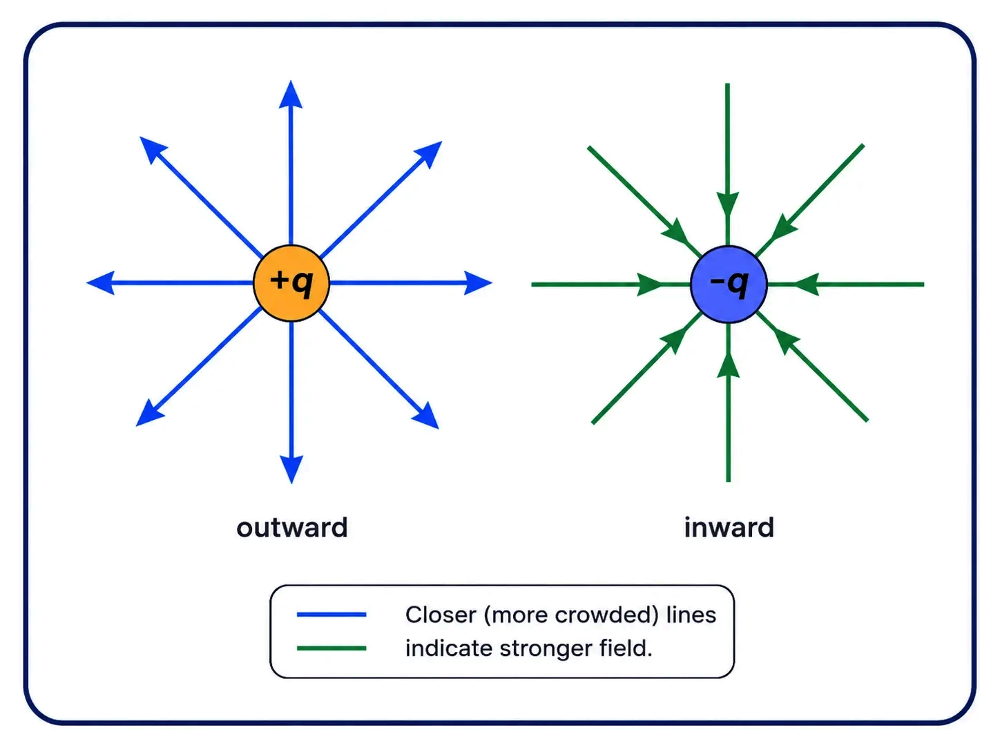
For point charges, lines are radial; arrows give direction (+ out, − in). Crowding
indicates stronger field (qualitatively).
🎯Key Concepts
- ➡️Direction rule: tangent to line gives direction of E; arrow is along E for a + test charge
- 🧵Strength rule (qualitative): in a diagram, more crowded lines represent larger |E|
- 🎯Point charge pattern: +Q → radial outward lines; −Q → radial inward lines
- ⚖️Convention note: number of lines is chosen by the drawer; only relative crowding in the same diagram is meaningful
- 🚫Field lines never intersect (otherwise direction of E at a point would be ambiguous)
🔎RULES YOU MUST REMEMBER (JEE/NEET)
- A field line’s tangent gives direction of E; arrow shows force direction on a + test charge.
- Lines begin on + (or ∞) and end on − (or ∞); they do not start/stop in empty space.
- Field lines never intersect; otherwise E would have two directions at one point.
- Closer spacing in a diagram represents larger |E| (compare crowding locally).
- In electrostatics, field lines do not form closed loops (they have distinct start/end).
- For a point charge, the field depends only on distance r, so the pattern is identical in every direction (spherical symmetry).
- As you go farther away, the same set of lines drawn around the charge gets spread over larger spherical surfaces.
- Hence crowding decreases with r. This matches the known result that |E| decreases as 1/r2 for a point charge (crowding is a visual cue, not a measurable quantity).
⚖️FIELD LINE PATTERNS (VERY COMMON MCQ)
| Basis | + point charge | − point charge | Uniform field (ideal) |
|---|---|---|---|
| Direction of arrows | Away from charge | Toward charge | Same direction everywhere |
| Shape of lines | Radial straight | Radial straight | Parallel straight |
| Crowding meaning (qualitative) | More crowded near charge | More crowded near charge | Equal spacing |
| Symmetry | Spherical | Spherical | Translational |
✏️Solved Q&A
1
Why do electric field lines never intersect?
Answer:
At any point in space, the electric field vector E has a unique direction.
The tangent to a field line at a point represents the direction of E there.
If two lines intersected, there would be two different tangents at the same point.
That would imply two different directions of E at one point, which is impossible.
At any point in space, the electric field vector E has a unique direction.
The tangent to a field line at a point represents the direction of E there.
If two lines intersected, there would be two different tangents at the same point.
That would imply two different directions of E at one point, which is impossible.
✓ They cannot intersect because E cannot have two directions at the same
point.
2
In electrostatics, why don’t field lines form closed loops?
Answer:
In electrostatics, the electric field is conservative.
Field lines start on positive charges and end on negative charges (or at infinity).
A closed loop would have no start or end, contradicting the source/sink nature of charges in electrostatics.
In electrostatics, the electric field is conservative.
Field lines start on positive charges and end on negative charges (or at infinity).
A closed loop would have no start or end, contradicting the source/sink nature of charges in electrostatics.
✓ Electrostatic field lines have distinct start/end on charges (or infinity),
so they do not form closed loops.
⭐Important Points
- Arrow on a field line gives direction of E (force on + test charge); for a negative test charge, force is opposite to the arrow.
- Crowding of lines is used to compare E magnitude qualitatively within the same diagram; the absolute number of lines is a chosen convention.
- Point charge field lines are radial because E has spherical symmetry and depends only on distance r from the charge.
- Field lines cannot intersect; at any point, E has a unique direction.
- In electrostatics, field lines do not form closed loops.
💡Memory Technique
“Mnemonic: TaD = Tangent–Arrow–Density”
📌Quick Recap
Tangent to a field line at any point gives the direction of E at
that point.Arrow shows the direction of force on a positive test
charge.Field lines originate on + charges and terminate on − charges (or at
infinity).Field lines never intersect.In
electrostatics, field lines do not form closed loops.For an isolated point
charge, field lines are radial (spherical symmetry).Crowding of field lines is
a qualitative representation of larger |E|; absolute number of lines is arbitrary.
Scalar measure of field lines crossing a surface; area vector; foundation for
Gauss’s Law
ELECTRIC FLUX
📖Definition & Introduction
- Electric flux Δφ through a small area element ΔS: Δφ = E⃗·ΔS = E ΔS cos θ, where θ is the angle between E⃗ and the outward normal n̂.
- Analogy: like the volume of liquid crossing an area per second in a stream — but note, flux of E is a mathematical measure, not an actual physical flow.
- Flux is proportional to the number of field lines crossing the area (relative density of lines gives field strength).
- Area vector ΔS = ΔS n̂: magnitude ΔS, direction along the normal n̂ to the (planar) element.
- For a closed surface, n̂ is taken along the outward normal by convention.
- Total flux through a surface S: φ ≈ Σ E⃗·ΔS (exact only as ΔS → 0, i.e. a surface integral).
2 Diagram
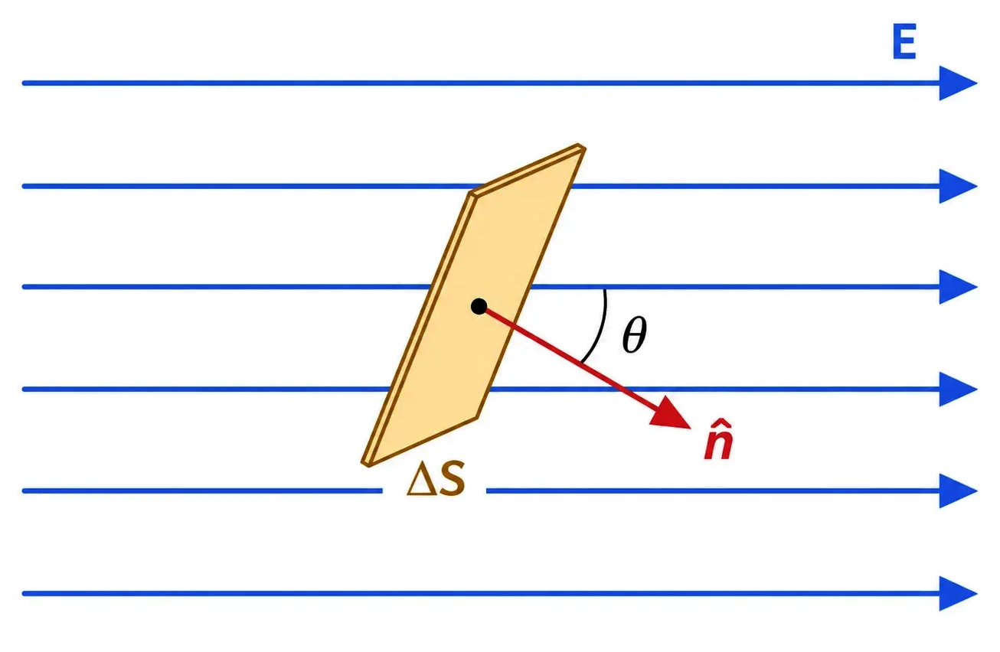
Area element ΔS tilted at angle θ to a uniform field E; flux Δφ = EΔS cos θ.
🎯Key Concepts
- 📐Flux depends on orientation of ΔS, not just its magnitude — like water through a tilted ring.
- ⬆️Maximum flux when ΔS ⟂ E (θ = 0°); zero flux when ΔS ∥ E (θ = 90°).
- 🧭For a closed surface the outward-normal convention removes any ambiguity of direction.
- 〰️Field lines never cross; their density is what flux physically represents.
- 🔢Flux Δφ = E⃗·ΔS is a scalar (dot product of two vectors).
🔎TILT DEPENDENCE — WHY ORIENTATION MATTERS
- Hold ΔS normal to the field: number of lines crossing it ∝ E ΔS (maximum crossing).
- Tilt ΔS by angle θ: only the projected area ΔS cos θ is effectively 'facing' the field.
- So Δφ = E (ΔS cos θ) = (E cos θ) ΔS — same result read two ways: projected area, or component of E along n̂.
- At θ = 90°, the surface is edge-on to the field: no lines cross it, Δφ = 0.
⚙️AREA VECTOR OF A CURVED / CLOSED SURFACE
- Divide any curved surface into small elements; each element is (nearly) planar, so it gets its own area vector along its own normal.
- A normal can point two ways — this ambiguity is fixed by a convention suited to the situation.
- For a closed surface: every element's vector points along the outward normal, ΔS = ΔS n̂.
- Total flux through the closed surface: φ ≈ Σ E⃗·ΔS over all elements — this sum is the basis of Gauss's Law.
📊FLUX IN DIFFERENT SITUATIONS — QUICK REFERENCE
| Situation | Angle θ | Flux Δφ | Physical meaning |
|---|---|---|---|
| Area normal ∥ field | 0° | Δφ = EΔS (maximum) | All lines cross straight-on |
| Area tilted | 0° < θ < 90° | Δφ = EΔS cos θ | Only the projected area ΔS cos θ counts |
| Area edge-on to field | 90° | Δφ = 0 | Field lines graze the surface; none cross |
| Closed surface, uniform field, no charge enclosed | — | Net φ = 0 | Flux entering = flux leaving (e.g. a closed cylinder in uniform E) |
🧮Formulas
Flux through a small planar element (E ~ constant over it):
Δφ = E⃗ · ΔS = E ΔS cos θ
Sum over all elements of a general surface S:
φ ≈ Σ E⃗ · ΔS
Exact result as ΔS → 0 (a surface integral):
φ = ∫∫ E⃗ · dS⃗
Area vector (magnitude ΔS, along normal):
ΔS = ΔS n̂
Closed surface convention:
n̂ = outward normal
Two equivalent readings of the same product:
EΔScos θ = E(ΔScos θ) = E⊥ΔS
| φ = | Electric flux through a surface (N C⁻¹ m² = V m) |
| E = | Magnitude of electric field (N C⁻¹) |
| ΔS = | Magnitude of a small area element (m²) |
| θ = | Angle between E⃗ and outward normal n̂ |
| n̂ = | Unit vector normal to the area element |
Electric flux through an area element (definition):
Δφ = E⃗·ΔS = E ΔS cos θ
📈Graph
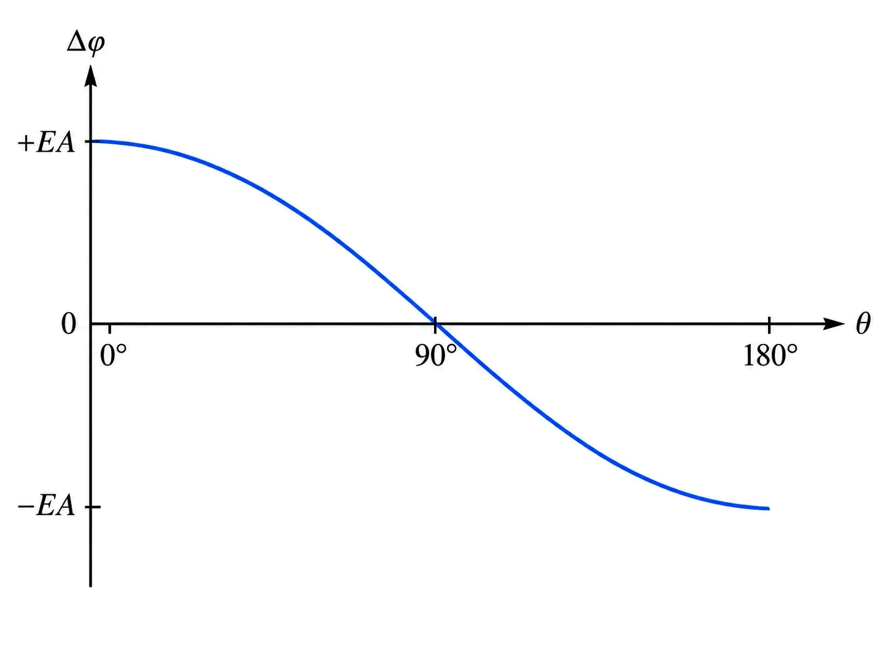
Δφ vs θ for fixed E, ΔS: a cosine curve — max at θ=0°, zero at θ=90°, negative
beyond 90° (field points into the surface).
✏️Solved Examples
1
A uniform electric field E = 4 × 10³ N/C acts along the x-axis. Find the flux
through a square loop of side 5 cm (a) with its plane parallel to the yz-plane, (b) with its
normal making a 60° angle with the x-axis.
Solution:
Given: E = 4×10³ N/C, side = 0.05 m ⇒ ΔS = (0.05)² = 2.5×10⁻³ m².
(a) Plane ∥ yz-plane ⇒ normal ∥ x-axis ⇒ θ = 0°.
Δφ = EΔS cos0° = 4×10³ × 2.5×10⁻³ × 1 = 10 N m² C⁻¹.
(b) Normal makes 60° with x-axis ⇒ θ = 60°, cos60° = 0.5.
Δφ = 4×10³ × 2.5×10⁻³ × 0.5 = 5 N m² C⁻¹.
Given: E = 4×10³ N/C, side = 0.05 m ⇒ ΔS = (0.05)² = 2.5×10⁻³ m².
(a) Plane ∥ yz-plane ⇒ normal ∥ x-axis ⇒ θ = 0°.
Δφ = EΔS cos0° = 4×10³ × 2.5×10⁻³ × 1 = 10 N m² C⁻¹.
(b) Normal makes 60° with x-axis ⇒ θ = 60°, cos60° = 0.5.
Δφ = 4×10³ × 2.5×10⁻³ × 0.5 = 5 N m² C⁻¹.
✓ (a) φ = 10 N m² C⁻¹ (b) φ = 5 N m² C⁻¹.
2
A closed cylindrical surface (axis parallel to a uniform field E) encloses no
charge. Show that the net outward flux through it is zero.
Solution:
Let the two flat end-caps have area S each.
Face 1 (outward normal opposite to E): φ₁ = −ES.
Face 2 (outward normal along E): φ₂ = +ES.
Curved surface: normal perpendicular to E everywhere ⇒ φ₃ = 0.
Net flux φ = φ₁+φ₂+φ₃ = −ES+ES+0 = 0, consistent with zero enclosed charge.
Let the two flat end-caps have area S each.
Face 1 (outward normal opposite to E): φ₁ = −ES.
Face 2 (outward normal along E): φ₂ = +ES.
Curved surface: normal perpendicular to E everywhere ⇒ φ₃ = 0.
Net flux φ = φ₁+φ₂+φ₃ = −ES+ES+0 = 0, consistent with zero enclosed charge.
✓ Net flux φ = 0.
⭐Important Points
- Flux is a scalar; net flux through any closed surface is 0 if the enclosed charge is 0 (previews Gauss's Law).
- Sign of flux depends on the direction of E relative to the chosen (outward) normal.
- SI unit of φ: N C⁻¹ m² (equivalently, V m).
- Field-line picture: flux ∝ number of field lines threading the area.
- The exact definition needs the limit ΔS → 0 (turns the sum into a surface integral).
💡Memory Technique
“Flux = Field × Projected Area”
🧮Formula Sheet
Δφ = E⃗·ΔS = E ΔS cos θΔS = ΔS n̂ (outward normal
for closed surface)φ ≈ Σ E⃗·ΔS (total flux through S)Unit of φ: N C⁻¹ m² (= V m)
Pair of equal & opposite charges; dipole moment p; field on the axis and on the
equatorial plane
ELECTRIC DIPOLE
📖Definition & Introduction
- An electric dipole is a pair of equal and opposite point charges +q and −q separated by a distance 2a.
- Dipole axis: the line joining the two charges; by convention its direction is from −q to +q.
- Centre of the dipole: the mid-point of the line joining −q and +q.
- Dipole moment vector: p⃗ = q × 2a p̂; magnitude p = q(2a); SI unit: C m.
- Total charge of a dipole is zero, but its field is not zero — the two charges are separated, so their fields don't exactly cancel at a finite distance.
- For r ≫ 2a the dipole field falls off as 1/r³ — faster than the 1/r² field of a single charge, because of the near-cancellation.
2 Diagram
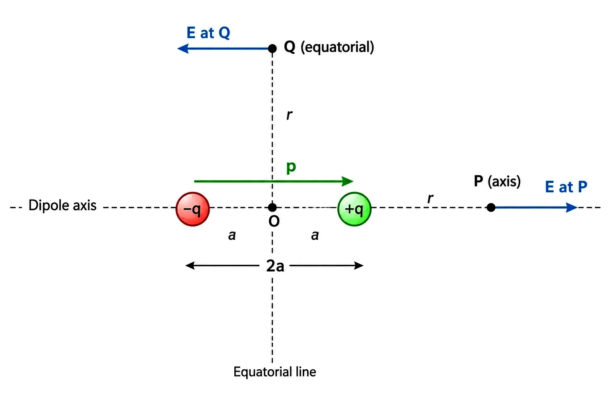
Dipole −q to +q with moment p; P on the axis, Q on the equatorial
(perpendicular-bisector) line.
🎯Key Concepts
- 🧲Field is not zero even though net charge is zero — separation is what matters.
- 📍Two special results: field on the axis, and field on the equatorial plane.
- 🔬Point-dipole limit: 2a → 0, q → ∞, keeping p = q(2a) finite — makes the large-r formulas exact for any r.
- 💧Polar molecules (e.g. H₂O) carry a permanent p; non-polar ones (CO₂, CH₄) get an induced p only in an external field.
- ⚖️Centre of positive/negative charge is defined like a centre of mass, weighted by charge.
🔎FIELD ON THE AXIS (END-ON POSITION)
- Point P is on the dipole axis at distance r from centre O, on the side of +q.
- Charges are at distances (r−a) and (r+a) from P.
- E₋q = −q/[4πε₀(r+a)²] p̂ E₊q = +q/[4πε₀(r−a)²] p̂
- Adding with a common denominator: E = [q/4πε₀]·[4ar/(r²−a²)²] p̂.
- For r ≫ a: Eaxis = 2p/(4πε₀r³) p̂ — field points along p⃗ (P is closer to +q, so its field wins).
🔎FIELD ON THE EQUATORIAL LINE (BROADSIDE-ON)
- Point Q lies on the perpendicular bisector of the dipole, at distance r from O.
- Both charges are equidistant from Q: E₊q = E₋q = q/[4πε₀(r²+a²)] in magnitude.
- Components ⟂ to the axis cancel; components along the axis (both pointing opposite to p̂) add up.
- E = −[1/4πε₀]·[2qa/(r²+a²)^(3/2)] (direction opposite to p⃗).
- For r ≫ a: Eeq = −p/(4πε₀r³) — exactly half the axial magnitude at the same r, and reversed.
📊AXIAL vs EQUATORIAL DIPOLE FIELD (r ≫ a)
| Basis | On the axis | On the equatorial plane |
|---|---|---|
| Formula | E = 2p/(4πε₀r³) | E = p/(4πε₀r³) |
| Direction relative to p⃗ | Along p⃗ (parallel) | Opposite to p⃗ (antiparallel) |
| Relative magnitude at same r | 2× (twice) | 1× (reference / half of axial) |
| Distance dependence | 1/r³ | 1/r³ |
| Exact for point-dipole (2a→0)? | Yes, for any r | Yes, for any r |
🧮Formulas
Dipole moment (defines the dipole):
p⃗ = q × 2a p̂ (p = 2aq, in C m)
Axial field, exact, any r:
E = q4πε₀ ·
4ar(r²−a²)² p̂
Equatorial field, exact, any r:
E = −14πε₀ ·
2qa(r²+a²)^(3/2)
Large-r limit (r ≫ a), on axis:
Eaxis = 2p4πε₀r³ p̂
Large-r limit (r ≫ a), equatorial:
Eeq = −p4πε₀r³
Why 1/r³? Net charge is zero, so leading 1/r² terms cancel; the leftover falls
faster.
| p = | Dipole moment (C m) |
| q = | Magnitude of each charge (C) |
| 2a = | Separation between the charges (m) |
| r = | Distance from centre O (m) |
| p̂ = | Unit vector along axis, −q → +q |
Dipole field at large distance (point-dipole approx.):
Eaxis = 2p/(4πε₀r³), Eeq =
−p/(4πε₀r³)
📈Graph
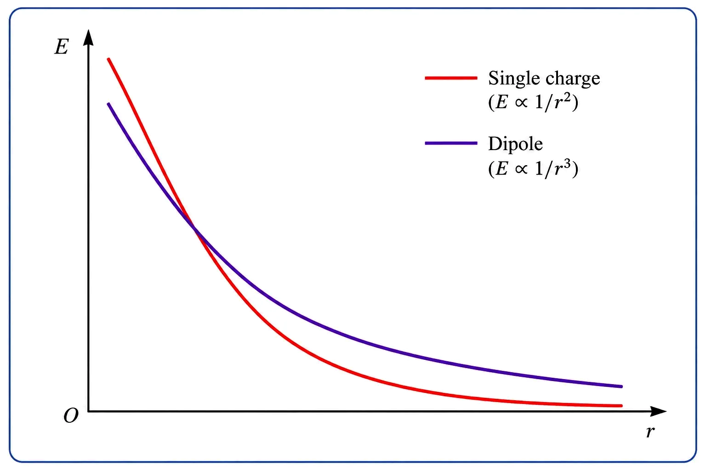
|E| vs r: dipole field (∝1/r³) falls off faster than a single point charge's field
(∝1/r²).
✏️Solved Examples
1
Two charges +2 μC and −2 μC, 1.0 cm apart, form a dipole. Find the magnitude of E
at a point 10 cm from the centre, on the axis.
Solution:
p = q(2a) = 2×10⁻⁶ × 0.01 = 2×10⁻⁸ C m. Since r = 0.10 m ≫ a = 0.005 m (ratio 20), use the large-r axial formula.
E = 2kp/r³ = 2×(9×10⁹)×(2×10⁻⁸)/(0.10)³ = (3.6×10²)/(1.0×10⁻³) = 3.6×10⁵ N C⁻¹, directed along p⃗.
p = q(2a) = 2×10⁻⁶ × 0.01 = 2×10⁻⁸ C m. Since r = 0.10 m ≫ a = 0.005 m (ratio 20), use the large-r axial formula.
E = 2kp/r³ = 2×(9×10⁹)×(2×10⁻⁸)/(0.10)³ = (3.6×10²)/(1.0×10⁻³) = 3.6×10⁵ N C⁻¹, directed along p⃗.
✓ Eaxis ≈ 3.6×10⁵ N C⁻¹.
2
For the same dipole as Example 1, find E at a point 10 cm from the centre on the
equatorial line, and compare with the axial value.
Solution:
Equatorial formula: E = kp/r³ = (9×10⁹)×(2×10⁻⁸)/(0.10)³ = (1.8×10²)/(1.0×10⁻³) = 1.8×10⁵ N C⁻¹, directed opposite to p⃗.
Compare: 1.8×10⁵ N C⁻¹ is exactly half of the axial value (3.6×10⁵ N C⁻¹) found earlier — as expected.
Equatorial formula: E = kp/r³ = (9×10⁹)×(2×10⁻⁸)/(0.10)³ = (1.8×10²)/(1.0×10⁻³) = 1.8×10⁵ N C⁻¹, directed opposite to p⃗.
Compare: 1.8×10⁵ N C⁻¹ is exactly half of the axial value (3.6×10⁵ N C⁻¹) found earlier — as expected.
✓ Eeq ≈ 1.8×10⁵ N C⁻¹ = ½ × Eaxis.
⭐Important Points
- Net charge of a dipole = 0, but its field ≠ 0 — a direct result of the charges being separated.
- Dipole field ∝ 1/r³ — falls off faster than a single charge's 1/r².
- On the axis, E ∥ p⃗; on the equatorial line, E is antiparallel to p⃗ and exactly half the axial magnitude at equal r.
- Point-dipole idealisation (2a→0, q→∞, p finite) makes the large-r formulas exact at any r.
- H₂O is polar (permanent p); CO₂, CH₄ are non-polar (only an induced p in an external field).
💡Memory Technique
“Axial = 2×, Equatorial = 1×, both ∝ 1/r³”
🧮Formula Sheet
p⃗ = q(2a) p̂ (dipole moment, C m)Eaxis = [q/4πε₀]·[4ar/(r²−a²)²] p̂ (exact)Eaxis ≈ 2p/(4πε₀r³) (r ≫ a)Eeq ≈ −p/(4πε₀r³)
(r ≫ a)
Torque τ⃗ = p⃗ × E⃗ on a dipole; zero net force in uniform field; force appears in
non-uniform field
DIPOLE IN A UNIFORM EXTERNAL FIELD
📖Definition & Introduction
- A permanent dipole of moment ( exists irrespective of ; it is not induced by it) is placed in a uniform external field .
- Force on : ; force on : . Net force = because is the same at both charges in a uniform field.
- However, the two equal-and-opposite forces act at different points, separated by . Together they form a couple that produces a net torque.
- Torque: — it tends to rotate the dipole so that aligns with .
- Since the net force is zero, the torque of the couple is the same about any choice of origin.
- when ( , aligned). This is the equilibrium orientation.
2 Diagram
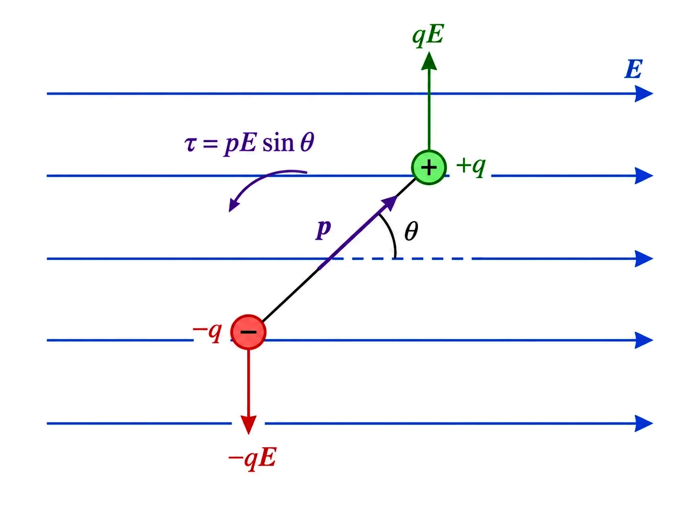
Dipole at angle θ to uniform field E⃗: forces qE and −qE form a couple; net torque τ
= pE sin θ.
🎯Key Concepts
- 🔄 Torque magnitude: ; its direction is perpendicular to the plane containing and according to the right-hand rule.
- 0️⃣ at (stable) and (unstable); is maximum at .
- ⚡ In a non-uniform field, the forces on and are unequal; therefore, a net force appears even without rotation.
- ➡️ (pointing towards the increasing field): the net force acts towards the stronger field.
- ⬅️ (antiparallel): the net force acts towards the weaker field.
🔎TORQUE — HOW THE COUPLE ARISES
- Perpendicular distance between the two antiparallel forces (arm of the couple): .
- Torque magnitude: .
- Direction: normal to the plane containing and (out of the page for the sense shown in the diagram).
- Vector form: — automatically zero when is parallel or antiparallel to because .
⚙️FORCE IN A NON-UNIFORM FIELD
- If is non-uniform, the force magnitudes at and at are generally unequal. This produces a net translational force.
- (pointing towards the increasing field): the net force acts in the direction of the increasing field.
- antiparallel to : the net force acts in the direction of the decreasing field.
- This explains why a charged comb, which produces a non-uniform electric field, attracts neutral bits of paper. The field polarises the paper and induces along . The non-uniformity of the field then pulls the paper towards the comb.
📊UNIFORM vs NON-UNIFORM EXTERNAL FIELD
| Basis | Uniform | Non-uniform |
|---|---|---|
| Net force on dipole | Zero—the forces and cancel. | Non-zero in general |
| Net torque | (may be non-zero) | Present in general; zero only when is parallel or antiparallel to . |
| What happens physically | Dipole rotates to align with the field | Dipole is pulled and may also rotate |
| Everyday example | Dipole between parallel charged plates | Charged comb attracting bits of paper |
🧮Formulas
Forces on the two ends:
Net force in a uniform field:
Torque = force × perpendicular arm:
Vector form (general result):
Special values:
| Dipole moment | |
| Magnitude of the uniform field | |
| Angle between and | |
| Half the charge separation (m) | |
| Torque on the dipole |
Torque on a dipole in a uniform field (net force = 0):
τ⃗ = p⃗ × E⃗
📈Graph
τ vs θ for fixed p, E: a sine curve — zero at θ=0° and 180°, maximum (τ=pE) at
θ=90°.
✏️Solved Examples
1
A dipole of moment 2×10⁻⁸ C m is placed at 30° to a uniform field of magnitude
5×10⁴ N C⁻¹. Find the torque on it.
Solution:
τ = pE sin θ = (2×10⁻⁸)(5×10⁴)(sin30°) = (2×10⁻⁸)(5×10⁴)(0.5).
= 1×10⁻³ × 0.5 = 5×10⁻⁴ N m.
τ = pE sin θ = (2×10⁻⁸)(5×10⁴)(sin30°) = (2×10⁻⁸)(5×10⁴)(0.5).
= 1×10⁻³ × 0.5 = 5×10⁻⁴ N m.
✓ τ = 5×10⁻⁴ N m.
2
For a dipole in a uniform field, at what angle θ is the torque exactly half of its
maximum value?
Solution:
Maximum torque: τmax = pE (at θ=90°). Required: τ = pE sinθ = ½(pE) ⇒ sinθ = ½.
θ = 30° or θ = 150° (both give sinθ = 0.5).
Maximum torque: τmax = pE (at θ=90°). Required: τ = pE sinθ = ½(pE) ⇒ sinθ = ½.
θ = 30° or θ = 150° (both give sinθ = 0.5).
✓ θ = 30° or 150°.
⭐Important Points
- is exact whenever the net force is zero, as in a uniform electric field.
- ( ): stable orientation, — any small disturbance is restored.
- ( antiparallel to ): too, but this is an unstable equilibrium.
- A non-uniform electric field can move or translate a dipole even though the object itself is electrically neutral overall.
- The attraction between a charged comb and neutral pieces of paper is a real-life demonstration of induced-dipole behaviour in a non-uniform electric field.
💡Memory Technique
“Uniform field: dipole TURNS, doesn’t move
(
)”
🧮Formula Sheet
Non-uniform field
,
in general
Linear, surface & volume charge densities (λ, σ, ρ); field via Coulomb’s law +
superposition
CONTINUOUS CHARGE DISTRIBUTION
📖Definition & Introduction
- When a huge number of closely-spaced discrete charges are involved (e.g. charge on a conductor's surface), it is impractical to track each one — the charge is instead treated as continuously distributed.
- Three kinds of charge density, each defined as charge per small (but macroscopically meaningful) element:
- Linear charge density λ = ΔQ/Δl (C m⁻¹) — for a charged wire.
- Surface charge density σ = ΔQ/ΔS (C m⁻²) — for a charged surface/conductor.
- Volume charge density ρ = ΔQ/ΔV (C m⁻³) — for charge spread through a region of space.
- The element (Δl, ΔS, ΔV) is small on the macroscopic scale, yet still contains a very large number of microscopic charges — this 'smooths out' the density and ignores charge quantisation, just like continuous mass/fluid density in mechanics.
🖼️Diagram
Linear, surface and volume charge elements: ΔQ = λΔl, σΔS, ρΔV respectively.
🎯Key Concepts
- 📈λ, σ, ρ can vary from point to point — in general they are functions of position.
- ➕Field of one small element ΔQ = ρΔV at a point P: ΔE⃗ = (1/4πε₀)(ρΔV/r′²) r̂′ — plain Coulomb's law.
- ΣTotal field: superpose (vector-sum) the contributions of all elements over the whole distribution.
- ∫Exact treatment needs ΔV → 0 — the sum becomes an integral (same superposition idea as for discrete charges).
- 🧩This Coulomb's-law-plus-superposition method works for discrete, continuous, or part-discrete/part-continuous charge.
🔎THREE KINDS OF DENSITY — WHEN TO USE WHICH
- Linear (λ): charge spread along a curve or wire, e.g. a long straight charged wire.
- Surface (σ): charge spread over a surface, e.g. a charged conducting plate or a spherical shell.
- Volume (ρ): charge spread through a 3-D region, e.g. a uniformly charged insulating sphere.
- Units: λ → C m⁻¹, σ → C m⁻², ρ → C m⁻³ (dimension count matches: 1-D, 2-D, 3-D).
⚙️FIELD DUE TO A CONTINUOUS DISTRIBUTION — METHOD
- Step 1: choose a convenient origin O; let a general element be at charge ρΔV.
- Step 2: field of that element at field point P (distance r′, unit vector r̂′): ΔE⃗ = (1/4πε₀)(ρΔV/r′²) r̂′.
- Step 3: superpose — sum ΔE⃗ over all volume elements: E⃗ ≈ Σ ΔE⃗.
- Step 4: for the exact field, let ΔV → 0; the sum becomes an integral (calculus techniques come later).
📊DISCRETE vs CONTINUOUS CHARGE
| Basis | Discrete charges (q₁, q₂, …, qₙ) | Continuous charge distribution |
|---|---|---|
| Charge specification | Individual point charges with position vectors | A density (λ, σ, or ρ) at each point |
| Field calculation | Vector sum: E⃗ = Σ(1/4πε₀)(qᵢ/rᵢ²) r̂ᵢ | Sum over ΔQ elements (ρΔV etc.), then ΔV → 0 |
| Underlying law | Coulomb's law + superposition | Same: Coulomb's law + superposition |
| Typical use | Few, well-separated charges | Charged conductors, wires, sheets, shells |
🧮Formulas
Definitions of the three densities:
λ = ΔQ/Δl (C m⁻¹)
σ = ΔQ/ΔS (C m⁻²)
ρ = ΔQ/ΔV (C m⁻³)
Field of a single small element (Coulomb's law):
ΔE⃗ = 14πε₀
ρΔVr′² r̂′
Superposition over the whole distribution:
E⃗ ≈ 14πε₀
Σall ΔV ρΔVr′² r̂′
| ΔQ = | Charge on a small element (C) |
| Δl, ΔS, ΔV = | Small line / area / volume element |
| r′ = | Distance from element to field point P |
| r̂′ = | Unit vector from the element to P |
Continuous-charge field (conceptual):
Superpose Coulomb-law contributions from every element, then let the element size →
0
📈Graph
Zoomed in, real charge is grainy (discrete); zoomed out, it looks like a smooth,
continuous density.
✏️Solved Examples
1
A thin rod of length 20 cm carries a uniformly distributed charge of 4×10⁻⁸ C.
Find its linear charge density.
Solution:
λ = Q/l = (4×10⁻⁸ C)/(0.20 m) = 2×10⁻⁷ C m⁻¹.
λ = Q/l = (4×10⁻⁸ C)/(0.20 m) = 2×10⁻⁷ C m⁻¹.
✓ λ = 2×10⁻⁷ C m⁻¹.
2
A flat circular plate of radius 7 cm carries a uniform surface charge density σ =
5×10⁻⁶ C m⁻². Find the total charge on the plate.
Solution:
Area A = πr² = π(0.07)² = π(4.9×10⁻³) ≈ 1.539×10⁻² m².
Q = σA = (5×10⁻⁶)(1.539×10⁻²) ≈ 7.7×10⁻⁸ C.
Area A = πr² = π(0.07)² = π(4.9×10⁻³) ≈ 1.539×10⁻² m².
Q = σA = (5×10⁻⁶)(1.539×10⁻²) ≈ 7.7×10⁻⁸ C.
✓ Q ≈ 7.7×10⁻⁸ C.
⭐Important Points
- λ, σ, ρ are macroscopic averages — they smooth out the underlying quantisation of real charge.
- The chosen element (Δl, ΔS, ΔV) must be 'physically small, yet large enough to hold many charges' — same idea as mass density.
- Superposition + Coulomb's law remain the foundation, exactly as for discrete charges.
- Charge density need not be uniform — it can vary with position.
- Exact field calculation generally needs integration (ΔV→0); symmetric cases are handled without heavy calculus using Gauss's Law (next topic).
💡Memory Technique
“λ – line, σ – surface, ρ – volume (1-D, 2-D, 3-D)”
🧮Formula Sheet
λ = ΔQ/Δl (C m⁻¹)σ = ΔQ/ΔS (C m⁻²)ρ = ΔQ/ΔV (C m⁻³)E⃗ ≈ (1/4πε₀) Σ (ρΔV/r′²) r̂′ (superposition over
elements)